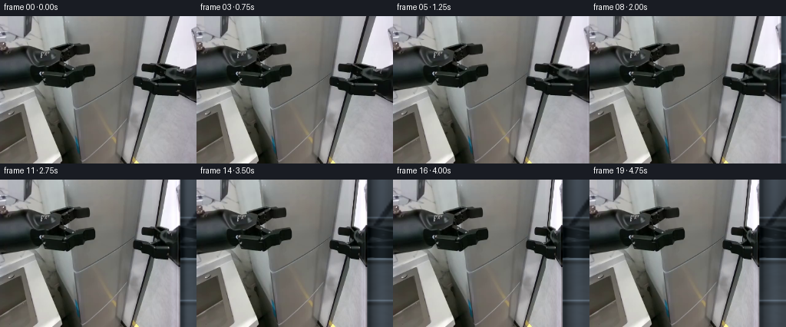
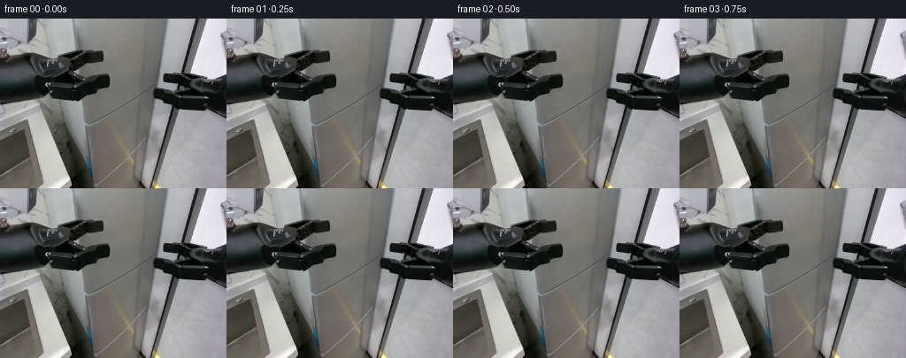
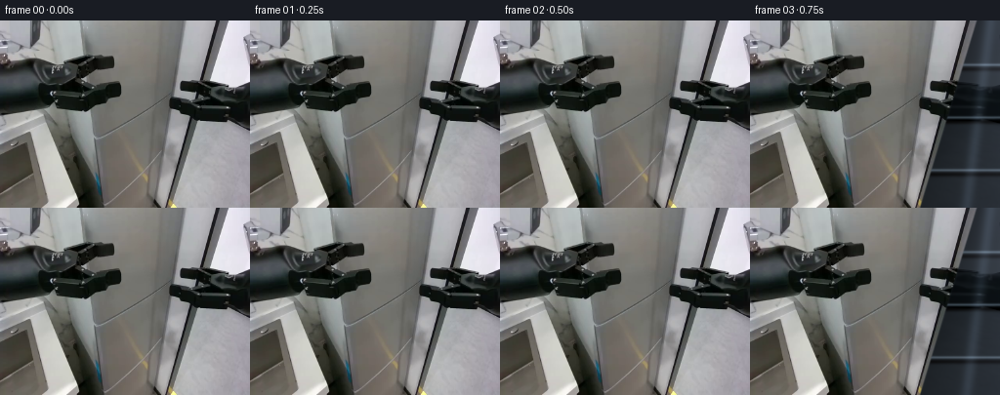
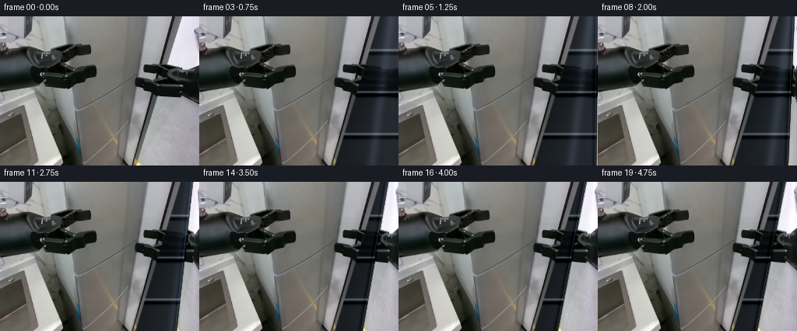
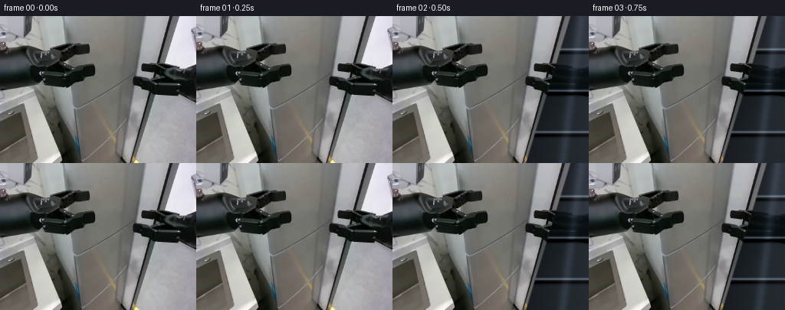
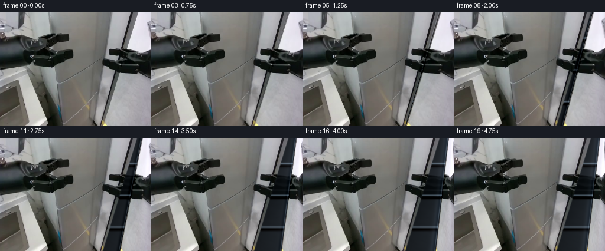
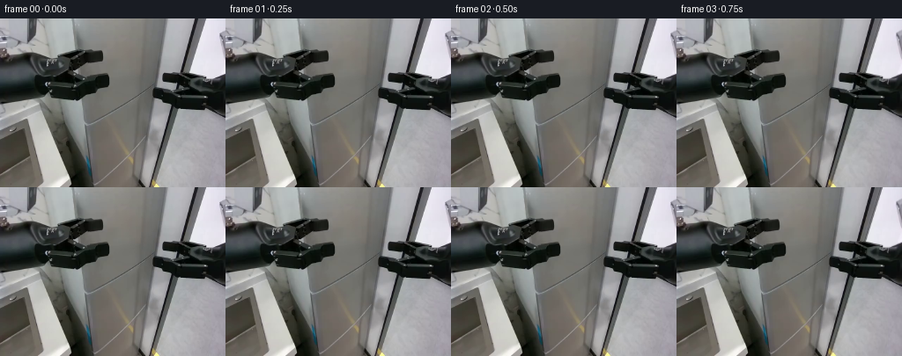

CODING AGENTS AS PIXEL WORLD MODELS
traex/DeepSeek-V4.1-Flash · common50_0009
点击播放 · 原生 RGB 像素
此结果可播放，但该运行尚未通过最终提交审核。页面展示不代表评测通过。
逐轮保存的候选
回放视频、检查图与代码变化。
每份候选均可单独播放。实际图片检查记录在下方工具轨迹中。
候选 01播放与检查图
点击播放 · 原生 RGB 像素


展开代码变化
--- 上一保存版本
+++ 本次保存版本
@@ -0,0 +1,168 @@
+from pathlib import Path
+
+import numpy as np
+from PIL import Image, ImageFilter
+
+import artifact_io
+
+
+CASE_DIR = Path(__file__).resolve().parent
+H, W = 192, 256
+FRAMES = 20
+
+# The door is hinged next to the visible gripper. Its free edge travels inward
+# as the door rotates toward the camera.
+HINGE_X = 198
+DOOR_CENTER_Y = 96.0
+
+
+def smoothstep(value):
+ value = np.clip(value, 0.0, 1.0)
+ return value * value * (3.0 - 2.0 * value)
+
+
+def bilinear(image, x, y):
+ """Sample an HxWx3 image at floating point coordinates."""
+ x = np.clip(x, 0.0, W - 1.001)
+ y = np.clip(y, 0.0, H - 1.001)
+ x0 = np.floor(x).astype(np.int32)
+ y0 = np.floor(y).astype(np.int32)
+ x1 = np.minimum(x0 + 1, W - 1)
+ y1 = np.minimum(y0 + 1, H - 1)
+ fx = (x - x0)[..., None]
+ fy = (y - y0)[..., None]
+ top = image[y0, x0] * (1.0 - fx) + image[y0, x1] * fx
+ bottom = image[y1, x0] * (1.0 - fx) + image[y1, x1] * fx
+ return top * (1.0 - fy) + bottom * fy
+
+
+def feather_mask(xx, left, right, feather=2.0):
+ return smoothstep((xx - left + feather) / (2.0 * feather)) * (
+ 1.0 - smoothstep((xx - right + feather) / (2.0 * feather))
+ )
+
+
+def interior_view(base, reveal_left, angle):
+ """Build the visible inside of the refrigerator."""
+ yy, xx = np.mgrid[0:H, 0:W].astype(np.float32)
+
+ # Reuse the silver surface as a softly focused back wall. A mirror-like
+ # reflection keeps the interior in the same palette as the source frame.
+ sample_x = HINGE_X + 3.0 + 0.36 * np.maximum(xx - reveal_left, 0.0)
+ sample_y = yy + 0.8 * np.sin(yy * 0.055) + 1.5
+ wall = bilinear(base, sample_x, sample_y)
+ wall = wall * 0.29 + np.array([15.0, 19.0, 21.0], dtype=np.float32)
+
+ # Darker side walls and a faint cool reflection down the interior.
+ depth = np.clip((xx - reveal_left) / max(W - reveal_left, 1.0), 0.0, 1.0)
+ wall *= (0.78 + 0.22 * depth)[..., None]
+ wall += (18.0 * np.exp(-((xx - (reveal_left + 0.55 * (W - reveal_left))) / 9.0) ** 2))[
+ ..., None
+ ] * np.array([0.72, 0.82, 0.92], dtype=np.float32)
+
+ # Three rigid glass shelves. Their slight perspective and dark undersides
+ # make the revealed cavity read as depth rather than a flat darkened panel.
+ for shelf_y, strength in ((49.0, 0.72), (103.0, 0.92), (157.0, 0.82)):
+ slope = 0.035 * (yy - shelf_y)
+ line = np.exp(-((yy - shelf_y - slope) / 1.15) ** 2)
+ under = np.exp(-((yy - shelf_y - slope - 4.2) / 2.3) ** 2)
+ wall += (line * strength * 58.0)[..., None] * np.array([0.72, 0.79, 0.84])
+ wall -= (under * strength * 24.0)[..., None] * np.array([0.62, 0.73, 0.80])
+
+ # A narrow bright return at the hinge and a dark gasket at the opening.
+ hinge_glow = np.exp(-((xx - reveal_left + 1.8) / 1.6) ** 2)
+ wall += (hinge_glow * 22.0)[..., None] * np.array([0.84, 0.89, 0.93])
+ opening = smoothstep((xx - reveal_left + 1.5) / 3.0)
+ wall *= (0.83 + 0.17 * opening)[..., None]
+
+ # The cavity should not receive the door's warm highlights.
+ cool = np.array([0.91, 0.97, 1.03], dtype=np.float32)
+ return np.clip(wall * cool, 0.0, 255.0)
+
+
+def render_frame(base, angle_deg):
+ if angle_deg < 1e-5:
+ return base.astype(np.uint8, copy=True)
+
+ theta = np.deg2rad(angle_deg)
+ c = float(np.cos(theta))
+ s = float(np.sin(theta))
+ free_x = HINGE_X + (W - HINGE_X) * c
+
+ # Establish the cavity first, then lay the foreshortened door over it.
+ frame = base.copy()
+ interior = interior_view(base, free_x, angle_deg)
+ reveal = feather_mask(np.arange(W, dtype=np.float32)[None, :], free_x - 1.0, W + 2.0, 1.5)
+ frame = frame * (1.0 - reveal[..., None]) + interior * reveal[..., None]
+
+ yy, xx = np.mgrid[0:H, 0:W].astype(np.float32)
+ door = (xx >= HINGE_X - 0.5) & (xx <= free_x + 1.0)
+
+ # Inverse-project the compressed door back to the original silver surface.
+ u = np.clip((xx - HINGE_X) / max(free_x - HINGE_X, 0.5), 0.0, 1.0)
+ source_x = HINGE_X + (W - HINGE_X) * u
+ vertical_scale = 1.0 + 0.105 * s * u
+ source_y = DOOR_CENTER_Y + (yy - DOOR_CENTER_Y) / vertical_scale
+ source_y += 0.65 * s * u
+ door_pixels = bilinear(base, source_x, source_y)
+
+ # As the door turns, its brushed steel catches more of the cool room light.
+ turn_light = 1.0 + 0.095 * s * (0.25 + 0.75 * u)
+ door_pixels *= turn_light[..., None]
+ highlight = np.exp(-((u - 0.78) / 0.10) ** 2) * s
+ door_pixels += (highlight * 16.0)[..., None] * np.array([0.82, 0.89, 0.96])
+
+ alpha = feather_mask(xx, HINGE_X - 0.5, free_x + 1.0, 0.8)[..., None]
+ frame = frame * (1.0 - alpha) + np.clip(door_pixels, 0.0, 255.0) * alpha
+
+ # The free edge has visible thickness, a dark rubber gasket, and a narrow
+ # metallic catch. These details sell the door's rigid rotation.
+ edge_dark = np.exp(-((xx - free_x) / 1.0) ** 2)
+ edge_light = np.exp(-((xx - free_x + 1.8) / 0.75) ** 2)
+ frame -= (edge_dark * 23.0 * smoothstep(angle_deg / 12.0))[..., None] * np.array(
+ [0.72, 0.82, 0.90]
+ )
+ frame += (edge_light * 29.0 * smoothstep(angle_deg / 20.0))[..., None] * np.array(
+ [0.78, 0.86, 0.92]
+ )
+
+ # Contact shadow immediately behind the opening edge.
+ shadow = np.exp(-((xx - free_x - 4.0) / 3.2) ** 2)
+ frame -= (shadow * 12.0 * smoothstep(angle_deg / 15.0))[..., None]
+
+ return np.clip(frame, 0.0, 255.0).astype(np.uint8)
+
+
+def motion_curve():
+ # Two settled lead-in frames, a deliberate pull, and a tiny damped settle.
+ values = []
+ for index in range(FRAMES):
+ if index <= 2:
+ angle = 0.0
+ elif index <= 15:
+ angle = 68.0 * smoothstep((index - 2) / 13.0)
+ else:
+ settle = np.exp(-(index - 15) * 0.85)
+ angle = 68.0 + 1.15 * np.sin((index - 15) * 2.1) * settle
+ values.append(float(angle))
+ return values
+
+
+def main():
+ base = np.asarray(Image.open(CASE_DIR / "first_frame.png").convert("RGB")).astype(
+ np.float32
+ )
+ assert base.shape == (H, W, 3)
+
+ frames = []
+ for angle in motion_curve():
+ frames.append(render_frame(base, angle))
+ frames = np.stack(frames, axis=0).astype(np.uint8)
+
+ # The contract requires an exact source frame at time zero.
+ frames[0] = np.asarray(Image.open(CASE_DIR / "first_frame.png").convert("RGB"))
+ artifact_io.save(frames, CASE_DIR)
+
+
+if __name__ == "__main__":
+ main()
候选 02播放与检查图
点击播放 · 原生 RGB 像素
展开代码变化
--- 上一保存版本
+++ 本次保存版本
@@ -10,9 +10,10 @@
H, W = 192, 256
FRAMES = 20
-# The door is hinged next to the visible gripper. Its free edge travels inward
-# as the door rotates toward the camera.
-HINGE_X = 198
+# The fridge door's visible free edge follows the strong diagonal seam in the
+# source frame. The hinge is the off-screen vertical edge at x = W.
+EDGE_A = -0.3033
+EDGE_B = 231.5
DOOR_CENTER_Y = 96.0
@@ -36,44 +37,39 @@
return top * (1.0 - fy) + bottom * fy
-def feather_mask(xx, left, right, feather=2.0):
- return smoothstep((xx - left + feather) / (2.0 * feather)) * (
- 1.0 - smoothstep((xx - right + feather) / (2.0 * feather))
- )
-
-
-def interior_view(base, reveal_left, angle):
+def interior_view(base, edge, free_edge):
"""Build the visible inside of the refrigerator."""
yy, xx = np.mgrid[0:H, 0:W].astype(np.float32)
# Reuse the silver surface as a softly focused back wall. A mirror-like
# reflection keeps the interior in the same palette as the source frame.
- sample_x = HINGE_X + 3.0 + 0.36 * np.maximum(xx - reveal_left, 0.0)
- sample_y = yy + 0.8 * np.sin(yy * 0.055) + 1.5
+ width = np.maximum(W - edge, 1.0)
+ sample_x = edge + width * (0.24 + 0.52 * np.clip((xx - edge) / width, 0.0, 1.0))
+ sample_y = yy + 0.8 * np.sin(yy * 0.055) + 1.2
wall = bilinear(base, sample_x, sample_y)
- wall = wall * 0.29 + np.array([15.0, 19.0, 21.0], dtype=np.float32)
+ wall = wall * 0.22 + np.array([11.0, 15.0, 18.0], dtype=np.float32)
# Darker side walls and a faint cool reflection down the interior.
- depth = np.clip((xx - reveal_left) / max(W - reveal_left, 1.0), 0.0, 1.0)
- wall *= (0.78 + 0.22 * depth)[..., None]
- wall += (18.0 * np.exp(-((xx - (reveal_left + 0.55 * (W - reveal_left))) / 9.0) ** 2))[
+ depth = np.clip((xx - edge) / width, 0.0, 1.0)
+ wall *= (0.64 + 0.36 * depth)[..., None]
+ wall += (24.0 * np.exp(-((xx - (edge + 0.58 * width)) / 6.0) ** 2))[
..., None
] * np.array([0.72, 0.82, 0.92], dtype=np.float32)
# Three rigid glass shelves. Their slight perspective and dark undersides
# make the revealed cavity read as depth rather than a flat darkened panel.
- for shelf_y, strength in ((49.0, 0.72), (103.0, 0.92), (157.0, 0.82)):
+ for shelf_y, strength in ((45.0, 0.95), (99.0, 1.08), (153.0, 0.98)):
slope = 0.035 * (yy - shelf_y)
- line = np.exp(-((yy - shelf_y - slope) / 1.15) ** 2)
+ line = np.exp(-((yy - shelf_y - slope) / 1.35) ** 2)
under = np.exp(-((yy - shelf_y - slope - 4.2) / 2.3) ** 2)
- wall += (line * strength * 58.0)[..., None] * np.array([0.72, 0.79, 0.84])
- wall -= (under * strength * 24.0)[..., None] * np.array([0.62, 0.73, 0.80])
+ wall += (line * strength * 64.0)[..., None] * np.array([0.76, 0.83, 0.87])
+ wall -= (under * strength * 31.0)[..., None] * np.array([0.62, 0.73, 0.80])
# A narrow bright return at the hinge and a dark gasket at the opening.
- hinge_glow = np.exp(-((xx - reveal_left + 1.8) / 1.6) ** 2)
- wall += (hinge_glow * 22.0)[..., None] * np.array([0.84, 0.89, 0.93])
- opening = smoothstep((xx - reveal_left + 1.5) / 3.0)
- wall *= (0.83 + 0.17 * opening)[..., None]
+ hinge_glow = np.exp(-((xx - edge + 1.2) / 1.6) ** 2)
+ wall += (hinge_glow * 28.0)[..., None] * np.array([0.84, 0.89, 0.93])
+ opening = smoothstep((xx - edge + 1.0) / 2.5)
+ wall *= (0.70 + 0.30 * opening)[..., None]
# The cavity should not receive the door's warm highlights.
cool = np.array([0.91, 0.97, 1.03], dtype=np.float32)
@@ -87,20 +83,21 @@
theta = np.deg2rad(angle_deg)
c = float(np.cos(theta))
s = float(np.sin(theta))
- free_x = HINGE_X + (W - HINGE_X) * c
+ yy, xx = np.mgrid[0:H, 0:W].astype(np.float32)
+ edge = np.clip(EDGE_A * yy + EDGE_B, 4.0, W - 2.0)
+ free_edge = edge + (W - edge) * c
# Establish the cavity first, then lay the foreshortened door over it.
frame = base.copy()
- interior = interior_view(base, free_x, angle_deg)
- reveal = feather_mask(np.arange(W, dtype=np.float32)[None, :], free_x - 1.0, W + 2.0, 1.5)
+ interior = interior_view(base, edge, free_edge)
+ reveal = smoothstep((xx - edge + 1.2) / 2.4) * (
+ 1.0 - smoothstep((xx - free_edge + 0.7) / 1.4)
+ )
frame = frame * (1.0 - reveal[..., None]) + interior * reveal[..., None]
- yy, xx = np.mgrid[0:H, 0:W].astype(np.float32)
- door = (xx >= HINGE_X - 0.5) & (xx <= free_x + 1.0)
-
# Inverse-project the compressed door back to the original silver surface.
- u = np.clip((xx - HINGE_X) / max(free_x - HINGE_X, 0.5), 0.0, 1.0)
- source_x = HINGE_X + (W - HINGE_X) * u
+ u = np.clip((xx - free_edge) / np.maximum(W - free_edge, 0.5), 0.0, 1.0)
+ source_x = edge + (W - edge) * u
vertical_scale = 1.0 + 0.105 * s * u
source_y = DOOR_CENTER_Y + (yy - DOOR_CENTER_Y) / vertical_scale
source_y += 0.65 * s * u
@@ -112,23 +109,23 @@
highlight = np.exp(-((u - 0.78) / 0.10) ** 2) * s
door_pixels += (highlight * 16.0)[..., None] * np.array([0.82, 0.89, 0.96])
- alpha = feather_mask(xx, HINGE_X - 0.5, free_x + 1.0, 0.8)[..., None]
+ alpha = smoothstep((xx - free_edge + 0.7) / 1.4)[..., None]
frame = frame * (1.0 - alpha) + np.clip(door_pixels, 0.0, 255.0) * alpha
# The free edge has visible thickness, a dark rubber gasket, and a narrow
# metallic catch. These details sell the door's rigid rotation.
- edge_dark = np.exp(-((xx - free_x) / 1.0) ** 2)
- edge_light = np.exp(-((xx - free_x + 1.8) / 0.75) ** 2)
- frame -= (edge_dark * 23.0 * smoothstep(angle_deg / 12.0))[..., None] * np.array(
+ edge_dark = np.exp(-((xx - free_edge) / 1.0) ** 2)
+ edge_light = np.exp(-((xx - free_edge + 1.8) / 0.75) ** 2)
+ frame -= (edge_dark * 32.0 * smoothstep(angle_deg / 12.0))[..., None] * np.array(
[0.72, 0.82, 0.90]
)
- frame += (edge_light * 29.0 * smoothstep(angle_deg / 20.0))[..., None] * np.array(
+ frame += (edge_light * 37.0 * smoothstep(angle_deg / 20.0))[..., None] * np.array(
[0.78, 0.86, 0.92]
)
# Contact shadow immediately behind the opening edge.
- shadow = np.exp(-((xx - free_x - 4.0) / 3.2) ** 2)
- frame -= (shadow * 12.0 * smoothstep(angle_deg / 15.0))[..., None]
+ shadow = np.exp(-((xx - free_edge + 3.2) / 2.8) ** 2)
+ frame -= (shadow * 19.0 * smoothstep(angle_deg / 15.0))[..., None]
return np.clip(frame, 0.0, 255.0).astype(np.uint8)
候选 03播放与检查图
点击播放 · 原生 RGB 像素

展开代码变化
--- 上一保存版本
+++ 本次保存版本
@@ -47,23 +47,23 @@
sample_x = edge + width * (0.24 + 0.52 * np.clip((xx - edge) / width, 0.0, 1.0))
sample_y = yy + 0.8 * np.sin(yy * 0.055) + 1.2
wall = bilinear(base, sample_x, sample_y)
- wall = wall * 0.22 + np.array([11.0, 15.0, 18.0], dtype=np.float32)
+ wall = wall * 0.20 + np.array([9.0, 13.0, 16.0], dtype=np.float32)
# Darker side walls and a faint cool reflection down the interior.
depth = np.clip((xx - edge) / width, 0.0, 1.0)
- wall *= (0.64 + 0.36 * depth)[..., None]
+ wall *= (0.58 + 0.42 * depth)[..., None]
wall += (24.0 * np.exp(-((xx - (edge + 0.58 * width)) / 6.0) ** 2))[
..., None
] * np.array([0.72, 0.82, 0.92], dtype=np.float32)
# Three rigid glass shelves. Their slight perspective and dark undersides
# make the revealed cavity read as depth rather than a flat darkened panel.
- for shelf_y, strength in ((45.0, 0.95), (99.0, 1.08), (153.0, 0.98)):
+ for shelf_y, strength in ((43.0, 1.12), (97.0, 1.24), (151.0, 1.16)):
slope = 0.035 * (yy - shelf_y)
line = np.exp(-((yy - shelf_y - slope) / 1.35) ** 2)
under = np.exp(-((yy - shelf_y - slope - 4.2) / 2.3) ** 2)
- wall += (line * strength * 64.0)[..., None] * np.array([0.76, 0.83, 0.87])
- wall -= (under * strength * 31.0)[..., None] * np.array([0.62, 0.73, 0.80])
+ wall += (line * strength * 70.0)[..., None] * np.array([0.78, 0.85, 0.89])
+ wall -= (under * strength * 38.0)[..., None] * np.array([0.62, 0.73, 0.80])
# A narrow bright return at the hinge and a dark gasket at the opening.
hinge_glow = np.exp(-((xx - edge + 1.2) / 1.6) ** 2)
@@ -106,7 +106,7 @@
# As the door turns, its brushed steel catches more of the cool room light.
turn_light = 1.0 + 0.095 * s * (0.25 + 0.75 * u)
door_pixels *= turn_light[..., None]
- highlight = np.exp(-((u - 0.78) / 0.10) ** 2) * s
+ highlight = np.exp(-((u - 0.72) / 0.15) ** 2) * s
door_pixels += (highlight * 16.0)[..., None] * np.array([0.82, 0.89, 0.96])
alpha = smoothstep((xx - free_edge + 0.7) / 1.4)[..., None]
候选 04播放与检查图
候选 05播放与检查图
点击播放 · 原生 RGB 像素


展开代码变化
--- 上一保存版本
+++ 本次保存版本
@@ -131,16 +131,18 @@
def motion_curve():
- # Two settled lead-in frames, a deliberate pull, and a tiny damped settle.
+ # A short grasp hold, one smooth pull, then a small mechanical settle. The
+ # first two moving steps are deliberately gentle to avoid a popping hinge.
values = []
for index in range(FRAMES):
- if index <= 2:
+ if index <= 1:
angle = 0.0
- elif index <= 15:
- angle = 68.0 * smoothstep((index - 2) / 13.0)
+ elif index <= 16:
+ t = (index - 1) / 15.0
+ angle = 68.0 * (0.10 * t + 0.90 * smoothstep(t))
else:
- settle = np.exp(-(index - 15) * 0.85)
- angle = 68.0 + 1.15 * np.sin((index - 15) * 2.1) * settle
+ settle = np.exp(-(index - 16) * 0.9)
+ angle = 68.0 + 0.75 * np.sin((index - 16) * 2.2) * settle
values.append(float(angle))
return values
候选 06播放与检查图
点击播放 · 原生 RGB 像素


展开代码变化
--- 上一保存版本
+++ 本次保存版本
@@ -85,7 +85,9 @@
s = float(np.sin(theta))
yy, xx = np.mgrid[0:H, 0:W].astype(np.float32)
edge = np.clip(EDGE_A * yy + EDGE_B, 4.0, W - 2.0)
- free_edge = edge + (W - edge) * c
+ # The door is hinged at the off-screen right edge. A point at its closed
+ # free edge moves toward the hinge in projection as the door swings open.
+ free_edge = W - (W - edge) * c
# Establish the cavity first, then lay the foreshortened door over it.
frame = base.copy()
可观测工具轨迹
实际执行的命令与返回图片。
命令 1exit 0
/bin/bash -c "pwd && rg --files -g 'prompt.txt' -g 'GENERATION_RULES.md' -g 'first_frame.png' -g '*.py' -g '*.json' -g '*.md' | sort"
命令 2exit 0
/bin/bash -c "git status --short && find . -maxdepth 2 -type f -printf '%p %s bytes\\n' | sort | head -200"
命令 3exit 0
/bin/bash -c "sed -n '1,240p' GENERATION_RULES.md"
命令 4exit 0
/bin/bash -c "sed -n '1,240p' prompt.txt && printf '\\n--- task_spec.json ---\\n' && sed -n '1,240p' task_spec.json"
命令 5exit 0
/bin/bash -c "sed -n '1,280p' artifact_io.py"
命令 6exit 127
/bin/bash -c "file first_frame.png && python - <<'PY'
from PIL import Image
im=Image.open('first_frame.png')
print(im.mode, im.size, im.getbbox())
print(im.getextrema())
PY"命令 7exit 0
/bin/bash -c "python - <<'PY'
from PIL import Image
import numpy as np
im=Image.open('first_frame.png')
print('mode,size', im.mode, im.size)
a=np.array(im.convert('RGB'))
print('shape', a.shape, 'min', a.min((0,1)), 'max', a.max((0,1)), 'mean', a.mean((0,1)).round(2), 'std', a.std((0,1)).round(2))
# 8x8 block mean RGB
for y in range(0,192,16):
row=[]
for x in range(0,256,16):
b=a[y:y+16,x:x+16].mean((0,1)).astype(int)
row.append('%02x%02x%02x'%tuple(b))
print('%03d'%y, ' '.join(row))
PY"命令 8exit 0
/bin/bash -c "python - <<'PY'
from PIL import Image
import numpy as np
im=np.asarray(Image.open('first_frame.png').convert('RGB'))
# 4x4 downscale, luminance ascii
small=np.asarray(Image.fromarray(im).resize((64,48),Image.Resampling.BOX)).astype(float)
y=0.2126*small[:,:,0]+0.7152*small[:,:,1]+0.0722*small[:,:,2]
chars=' .:-=+*#%@'
for row in y:
print(''.join(chars[min(9,int(v/256*10))] for v in row))
PY"命令 9exit 0
/bin/bash -c "python - <<'PY'
from PIL import Image
import numpy as np
im=np.asarray(Image.open('first_frame.png').convert('RGB')).astype(float)
# color ascii using nearest of fixed palette
palette={'K':(20,20,20),'W':(220,220,225),'G':(110,110,110),'S':(160,160,160),'B':(70,80,85),'b':(130,130,120),'C':(180,150,100),'R':(150,70,50),'Y':(200,180,100)}
names=list(palette); p=np.array([palette[k] for k in names])
small=np.asarray(Image.fromarray(im.astype(np.uint8)).resize((64,48),Image.Resampling.BOX)).astype(float)
idx=((small[:,:,None,:]-p[None,None,:,:])**2).sum(-1).argmin(-1)
for row in idx:
print(''.join(names[i] for i in row))
PY"命令 10exit 0
/bin/bash -c "python - <<'PY'
from PIL import Image
import numpy as np
im=np.asarray(Image.open('first_frame.png').convert('RGB')).astype(float)
# edges at 2px grid, ascii 64x48
g=im.mean(2)
gx=np.abs(np.diff(g,axis=1)); gy=np.abs(np.diff(g,axis=0))
e=np.zeros_like(g); e[:,:-1]+=gx; e[:-1,:]+=gy
small=np.asarray(Image.fromarray(np.clip(e,0,255).astype(np.uint8)).resize((64,48),Image.Resampling.BOX))
chars=' .:-=+*#%@'
for row in small:
print(''.join(chars[min(9,int(v/256*10))] for v in row))
PY"命令 11exit 0
/bin/bash -c "python - <<'PY' mods=['numpy','PIL','cv2','scipy','skimage','imageio','matplotlib'] for m in mods: try: x=__import__(m) print(m,'OK',getattr(x,'__version__','')) except Exception as e: print(m,'NO',e) PY"
命令 12exit 0
/bin/bash -c "python - <<'PY'
from PIL import Image
import numpy as np
im=np.asarray(Image.open('first_frame.png').convert('RGB')).astype(float)
# print local color blocks, 8x8 blocks with exact means and std to identify objects
for y in range(0,192,24):
print('\\ny=',y)
for x in range(0,256,32):
a=im[y:y+24,x:x+32]
print(f'x{x:03d} {tuple(a.mean((0,1)).round().astype(int))} sd{tuple(a.std((0,1)).round().astype(int))}',end=' | ')
print()
PY"命令 13exit 0
/bin/bash -c "python - <<'PY'
import cv2, numpy as np
from PIL import Image
im=cv2.imread('first_frame.png')
g=cv2.cvtColor(im,cv2.COLOR_BGR2GRAY)
e=cv2.Canny(g,40,100)
lines=cv2.HoughLinesP(e,1,np.pi/180,threshold=20,minLineLength=15,maxLineGap=3)
arr=[]
if lines is not None:
for l in lines[:,0]:
x1,y1,x2,y2=map(int,l); ln=((x2-x1)**2+(y2-y1)**2)**.5
ang=np.degrees(np.arctan2(y2-y1,x2-x1))
arr.append((ln,ang,x1,y1,x2,y2))
for r in sorted(arr,reverse=True)[:100]: print('len%5.1f ang%6.1f (%3d,%3d)-(%3d,%3d)'%r)
PY"命令 14exit 0
/bin/bash -c "python - <<'PY'
from PIL import Image
im=Image.open('first_frame.png')
# upscale nearest to tmp only for local inspection via crop stats? create crops for potential OCR / segmentation
for name,box in [('full',(0,0,256,192)),('left',(0,80,120,192)),('center',(80,50,180,192)),('right',(140,0,256,192)),('top',(0,0,256,100))]:
im.crop(box).resize(((box[2]-box[0])*4,(box[3]-box[1])*4),Image.Resampling.NEAREST).save('inspect_'+name+'.png')
print('saved')
PY"命令 15exit 0
/bin/bash -c "python - <<'PY'
from PIL import Image
import numpy as np
im=np.asarray(Image.open('first_frame.png').convert('RGB'))
# 128x96 ascii with luminance and edge marker from 2x2; print x,y coords every 10
small=np.asarray(Image.fromarray(im).resize((128,96),Image.Resampling.BOX)).astype(float)
y=.2126*small[:,:,0]+.7152*small[:,:,1]+.0722*small[:,:,2]
chars=' .,:;irsXA253hMHGS#9B&@'
for j,row in enumerate(y):
print('%03d '%(j*2)+''.join(chars[min(len(chars)-1,int(v/256*len(chars)))] for v in row))
PY"命令 16exit 0
/bin/bash -c "python - <<'PY'
import cv2, numpy as np
from PIL import Image
im=cv2.imread('first_frame.png')
lab=cv2.cvtColor(im,cv2.COLOR_BGR2LAB)
Z=lab.reshape(-1,3).astype(np.float32)
crit=(cv2.TERM_CRITERIA_EPS+cv2.TERM_CRITERIA_MAX_ITER,100,.2)
for k in [8,12,16,24]:
_,labels,cent=cv2.kmeans(Z,k,None,crit,5,cv2.KMEANS_PP_CENTERS)
# BGR centers
print('\\nK',k)
for i,c in sorted(enumerate(cent), key=lambda z: sum(z[1])):
cnt=(labels==i).sum()
if cnt<30: continue
# center convert to rgb
rgb=cv2.cvtColor(np.uint8([[c]]),cv2.COLOR_LAB2RGB)[0,0]
ys,xs=np.where(labels.reshape(192,256)==i)
print(i, tuple(map(int,rgb)), cnt, 'bbox', (xs.min(),ys.min(),xs.max(),ys.max()))
PY"命令 17exit 0
/bin/bash -c "python - <<'PY'
from PIL import Image
import numpy as np
im=np.asarray(Image.open('first_frame.png').convert('RGB')).astype(float)
# print row-by-row color segment changes at selected columns
for x in [20,40,60,80,100,120,140,160,180,200,220,240]:
print('\\nx',x)
prev=None; start=0
for y in range(192):
c=tuple((im[y,x]//16).astype(int))
if c"'!=prev:
if prev is not None and y-start>=4: print(f'"' y{start:03d}-{y-1:03d}',tuple(im[start:y,x].mean(0).astype(int)), 'rgb')
prev=c; start=y
if 192-start>=4: print(f' y{start:03d}-191',tuple(im[start:,x].mean(0).astype(int)),'rgb')
PY"命令 18exit 0
/bin/bash -c "python - <<'PY'
from PIL import Image
import numpy as np
im=np.asarray(Image.open('first_frame.png').convert('RGB'))
# color quantized grid around right region at 2px resolution: chars by luminance plus hue
chars=' .:-=+*#%@'
for y in range(70,192,2):
s=''
for x in range(176,256,1):
r,g,b=im[y,x]; lum=.2126*r+.7152*g+.0722*b
s+=chars[min(9,int(lum/256*10))]
print('%03d '%y+s)
PY"命令 19exit 0
/bin/bash -c "python - <<'PY'
from PIL import Image
import numpy as np
im=np.asarray(Image.open('first_frame.png').convert('RGB'))
chars=' .:-=+*#%@'
for y in range(20,100,1):
s=''
for x in range(0,176,1):
r,g,b=im[y,x]; lum=.2126*r+.7152*g+.0722*b
s+=chars[min(9,int(lum/256*10))]
print('%03d '%y+s)
PY"命令 20exit 0
/bin/bash -c "python - <<'PY'
from PIL import Image
im=Image.open('first_frame.png')
print(im.info)
print(im.getexif())
PY"命令 21exit 0
/bin/bash -c "python - <<'PY'
import cv2,numpy as np
im=cv2.imread('first_frame.png')
g=cv2.cvtColor(im,cv2.COLOR_BGR2GRAY)
for t1,t2 in [(20,50),(30,80),(50,120)]:
e=cv2.Canny(g,t1,t2)
cv2.imwrite(f'edges_{t1}.png',e)
print(t1, e.sum()//255)
# contours
cnts,_=cv2.findContours((cv2.Canny(g,30,80)>0).astype(np.uint8),cv2.RETR_LIST,cv2.CHAIN_APPROX_SIMPLE)
res=[]
for c in cnts:
a=cv2.contourArea(c); p=cv2.arcLength(c,True); x,y,w,h=cv2.boundingRect(c)
if a>100:res.append((a,p,(x,y,w,h),len(c)))
for r in sorted(res,reverse=True)[:40]:print(r)
PY"命令 22exit 0
/bin/bash -c "python - <<'PY'
from PIL import Image
import numpy as np, cv2
im=np.asarray(Image.open('first_frame.png').convert('RGB'))
hsv=cv2.cvtColor(im,cv2.COLOR_RGB2HSV)
for t in [20,30,40,50,70,90]:
m=(hsv[:,:,1]>t)
print('sat>',t,m.sum(),'bbox',np.where(m)[1].min() if m.any() else None,np.where(m)[0].min() if m.any() else None,np.where(m)[1].max() if m.any() else None,np.where(m)[0].max() if m.any() else None)
# most saturated connected comps
m=(hsv[:,:,1]>40).astype(np.uint8)
n,l,st,cen=cv2.connectedComponentsWithStats(m)
for i in sorted(range(1,n),key=lambda i:st[i,4],reverse=True)[:20]:
print(i,st[i].tolist(),im[l==i].mean(0).astype(int).tolist())
PY"命令 23exit 0
/bin/bash -c "python - <<'PY'
from PIL import Image
import numpy as np
im=np.asarray(Image.open('first_frame.png').convert('RGB')).astype(float)
# print dense color samples along suspected arm line x=25+0.6*y etc, including color
for x in [15,25,35,45,55,65,75,85,95,105,115,125,135,145,155,165,175,185,195,205,215,225,235,245]:
vals=[]
for y in [30,60,90,120,150,180]:
vals.append('%02x%02x%02x'%tuple(im[y,x].astype(int)))
print(x,' '.join(vals))
PY"命令 24exit 0
/bin/bash -c "python - <<'PY'
import cv2, numpy as np
from PIL import Image
im=np.asarray(Image.open('first_frame.png').convert('RGB'))
# canny, contour bboxes with polygon simplification
edges=cv2.Canny(cv2.cvtColor(im,cv2.COLOR_RGB2GRAY),25,70)
cnts,_=cv2.findContours(edges,cv2.RETR_LIST,cv2.CHAIN_APPROX_SIMPLE)
res=[]
for c in cnts:
p=cv2.arcLength(c,True); a=abs(cv2.contourArea(c)); x,y,w,h=cv2.boundingRect(c)
if p>30: res.append((p,a,x,y,w,h,len(c)))
for r in sorted(res,reverse=True)[:100]: print('per%6.1f area%6.1f bbox %3d %3d %3d %3d n%d'%r)
PY"命令 25exit 0
/bin/bash -c "python - <<'PY'
from PIL import Image
import numpy as np
im=np.asarray(Image.open('first_frame.png').convert('RGB'))
chars=' .:-=+*#%@'
for y in range(90,192,1):
s=''
for x in range(0,176,1):
r,g,b=im[y,x]; lum=.2126*r+.7152*g+.0722*b
s+=chars[min(9,int(lum/256*10))]
print('%03d '%y+s)
PY"命令 26exit 0
/bin/bash -c "command -v chafa || true; command -v viu || true; command -v jp2 || true; command -v img2txt || true; command -v tesseract || true; command -v ffmpeg || true; command -v convert || true; python - <<'PY'
try:
import torch;print('torch',torch.__version__)
except Exception as e:print(e)
PY"命令 27exit 0
/bin/bash -c "python - <<'PY'
from PIL import Image
import numpy as np
im=np.asarray(Image.open('first_frame.png').convert('RGB')).astype(float)
# rough edge energy per 8x8 cell and dominant RGB, dense map coords
for y in range(0,192,8):
out=[]
for x in range(0,256,8):
a=im[y:y+8,x:x+8]
c=a.mean((0,1)).astype(int)
out.append('%02x%02x%02x'%tuple(c))
print('%03d '%y+' '.join(out))
PY"命令 28exit 0
/bin/bash -c "python - <<'PY'
from PIL import Image
import numpy as np
im=np.asarray(Image.open('first_frame.png').convert('RGB'))
# grayscale saved large and color saturation map
Image.fromarray(np.repeat(np.repeat(im,4,0),4,1)).save('first_frame_4x.png')
g=np.asarray(Image.fromarray(im).convert('L'))
Image.fromarray(g).resize((1024,768),Image.Resampling.NEAREST).save('first_frame_gray_4x.png')
PY"命令 29exit 0
/bin/bash -c "python - <<'PY'
import torch
print('cuda',torch.cuda.is_available())
try:
import transformers; print('transformers',transformers.__version__)
except Exception as e:print('no transformers',e)
try:
import diffusers; print('diffusers',diffusers.__version__)
except Exception as e:print('no diffusers',e)
PY"命令 30exit 130
/bin/bash -c "find /home/tiger/.cache -maxdepth 3 -type d 2>/dev/null | head -100; find /mnt -maxdepth 4 -iname '*sam*' -o -iname '*yolo*' 2>/dev/null | head -100"
命令 31exit 0
/bin/bash -c "python - <<'PY'
import cv2,numpy as np
from PIL import Image
im=np.asarray(Image.open('first_frame.png').convert('RGB'))
g=cv2.cvtColor(im,cv2.COLOR_RGB2GRAY)
# k-means grayscale and display label map as ascii downsample 4x4, each k separate maybe
Z=g.reshape(-1,1).astype(np.float32)
_,lab,cen=cv2.kmeans(Z,6,None,(cv2.TERM_CRITERIA_EPS+cv2.TERM_CRITERIA_MAX_ITER,50,.2),5,cv2.KMEANS_PP_CENTERS)
lab=lab.reshape(192,256); order=np.argsort(cen[:,0]); mp={int(v):i for i,v in enumerate(order)}
chars=' .:-=+*#%@'
for y in range(0,192,4):
print('%03d '%y+''.join(chars[mp[int(lab[y,x])]] for x in range(0,256,4)))
PY"命令 32exit 1
/bin/bash -c "python - <<'PY'
import cv2,numpy as np
from PIL import Image
im=np.asarray(Image.open('first_frame.png').convert('RGB'))
g=cv2.cvtColor(im,cv2.COLOR_RGB2GRAY).astype(float)
# blur then sobel magnitude, 2x2 pooling
s=cv2.GaussianBlur(g,(3,3),0)
gx=cv2.Sobel(s,cv2.CV_32F,1,0,ksize=3); gy=cv2.Sobel(s,cv2.CV_32F,0,1,ksize=3)
e=np.hypot(gx,gy)
e=cv2.resize(e,(128,96),interpolation=cv2.INTER_AREA)
chars=' .:-=+*#%@'
for j,row in enumerate(e):
print('%03d '%(j*2)+''.join(chars[min(9,int(v/80))] for v in row))
PY"命令 33exit 0
/bin/bash -c "python - <<'PY'
import cv2,numpy as np
from PIL import Image
im=np.asarray(Image.open('first_frame.png').convert('RGB'))
g=cv2.cvtColor(im,cv2.COLOR_RGB2GRAY).astype(np.float32)
s=cv2.GaussianBlur(g,(3,3),0)
gx=cv2.Sobel(s,cv2.CV_32F,1,0,ksize=3); gy=cv2.Sobel(s,cv2.CV_32F,0,1,ksize=3)
e=np.hypot(gx,gy)
e=cv2.resize(e,(128,96),interpolation=cv2.INTER_AREA)
chars=' .:-=+*#%@'
for j,row in enumerate(e):
print('%03d '%(j*2)+''.join(chars[min(9,int(v/80))] for v in row))
PY"命令 34exit 0
/bin/bash -c "python - <<'PY'
from PIL import Image
import numpy as np
im=np.asarray(Image.open('first_frame.png').convert('RGB'))
# rgb patches every 8x8 as unicode blocks, maybe terminal truecolor
for y in range(0,192,4):
for x in range(0,256,4):
r,g,b=im[y:y+4,x:x+4].mean((0,1)).astype(int)
print(f'\\x1b[48;2;{r};{g};{b}m ',end='')
print('\\x1b[0m')
PY"命令 35exit 0
/bin/bash -c "python - <<'PY'
from PIL import Image
import numpy as np
im=np.asarray(Image.open('first_frame.png').convert('RGB'))
h,w,_=im.shape
# brightness masks, print ascii at 4x4 where > thresholds
for th in [140,160,180,200,220]:
print('\\nth',th)
for y in range(0,192,4):
s=''
for x in range(0,256,4):
a=im[y:y+4,x:x+4].mean((0,1)); lum=a.mean()
s += '#' if lum>th else ('+' if lum>th-30 else ' ')
print(s)
PY"命令 36exit 0
/bin/bash -c "python - <<'PY'
from PIL import Image
import numpy as np
im=np.asarray(Image.open('first_frame.png').convert('RGB'))
# print columns 0-90 at 2px horizontal, 1px vertical, luminance compact
chars=' .:-=+*#%@'
for y in range(0,192,2):
s=''
for x in range(0,96,1):
a=im[y:y+2,x:x+1].mean((0,1)); lum=.2126*a[0]+.7152*a[1]+.0722*a[2]
s+=chars[min(9,int(lum/256*10))]
print('%03d '%y+s)
PY"命令 37exit 0
/bin/bash -c "python - <<'PY'
from PIL import Image
import numpy as np
im=np.asarray(Image.open('first_frame.png').convert('RGB'))
# detect high horizontal/vertical line segments by Hough on downsample perhaps
import cv2
for scale in [1,2]:
a=cv2.resize(im,(256//scale,192//scale),interpolation=cv2.INTER_AREA) if scale>1 else im
g=cv2.cvtColor(a,cv2.COLOR_RGB2GRAY)
e=cv2.Canny(g,50,100)
lines=cv2.HoughLinesP(e,1,np.pi/180,threshold=15,minLineLength=12,maxLineGap=3)
print('scale',scale)
if lines is not None:
for l in sorted(lines[:,0], key=lambda q:-((q[2]-q[0])**2+(q[3]-q[1])**2))[:80]:
x1,y1,x2,y2=[int(v*scale) for v in l]
ang=np.degrees(np.arctan2(y2-y1,x2-x1));ln=np.hypot(x2-x1,y2-y1)
print(f'{ln:5.1f} {ang:6.1f} ({x1},{y1})-({x2},{y2})')
PY"命令 38exit 0
/bin/bash -c "python - <<'PY'
from PIL import Image
import numpy as np
im=np.asarray(Image.open('first_frame.png').convert('RGB')).astype(float)
# sample lines corresponding to candidate rods, report avg color and continuity
for name,p1,p2 in [
('leftdiag',(40,90),(80,184)),('leftdiag2',(30,111),(49,186)),('rightdiag',(159,190),(175,90)),('rightdiag2',(169,191),(194,98)),('rightdiag3',(175,190),(202,102)),('rightupper',(177,78),(189,7)),('rightupper2',(208,61),(224,0)),
('mid',(96,123),(145,96)),('mid2',(118,109),(156,86))]:
x1,y1=p1;x2,y2=p2;n=100
vals=[]
for t in np.linspace(0,1,n):
x=x1+(x2-x1)*t;y=y1+(y2-y1)*t
vals.append(im[int(y),int(x)])
vals=np.array(vals)
print(name,'mean',vals.mean(0).astype(int),'minmax',vals.min(0).astype(int),vals.max(0).astype(int),'lum',(.2126*vals[:,0]+.7152*vals[:,1]+.0722*vals[:,2]).mean().round(1))
PY"命令 39exit 1
/bin/bash -c "python - <<'PY'
from PIL import Image
import numpy as np
im=np.asarray(Image.open('first_frame.png').convert('RGB')).astype(float)
# distances from candidate line samples and local patch appearance along perpendicular
for name,p1,p2 in [('left',(40,90),(80,184)),('right',(169,191),(194,98)),('right2',(175,190),(202,102)),('upper',(177,78),(189,7))]:
x1,y1=p1;x2,y2=p2
dx=x2-x1;dy=y2-y1;L=np.hypot(dx,dy); nx=-dy/L;ny=dx/L
print('\\n',name)
for t in [0,.2,.4,.6,.8,1]:
x=x1+dx*t;y=y1+dy*t
vals=[]
for d in [-8,-6,-4,-2,0,2,4,6,8]:
xx=int(round(x+nx*d));yy=int(round(y+ny*d))
vals.append('%3d'%int(im[yy,xx].mean()))
print('t%.1f xy(%3.0f,%3.0f)'%(t,x,y),' '.join(vals))
PY"命令 40exit 0
/bin/bash -c "python - <<'PY'
from PIL import Image
import numpy as np
im=np.asarray(Image.open('first_frame.png').convert('RGB')).astype(float)
for name,p1,p2 in [('right',(169,188),(194,98)),('right2',(175,187),(202,102)),('upper',(177,78),(189,7)),('mid',(96,123),(145,96))]:
x1,y1=p1;x2,y2=p2
dx=x2-x1;dy=y2-y1;L=np.hypot(dx,dy); nx=-dy/L;ny=dx/L
print('\\n',name)
for t in [0,.2,.4,.6,.8,1]:
x=x1+dx*t;y=y1+dy*t
vals=[]
for d in [-8,-6,-4,-2,0,2,4,6,8]:
xx=int(round(x+nx*d));yy=int(round(y+ny*d))
vals.append('%3d'%int(im[yy,xx].mean()))
print('t%.1f xy(%3.0f,%3.0f)'%(t,x,y),' '.join(vals))
PY"命令 41exit 0
/bin/bash -c "python - <<'PY'
import cv2,numpy as np
from PIL import Image
im=np.asarray(Image.open('first_frame.png').convert('RGB'))
# save edge and equalized high contrast
b,g,r=cv2.split(im)
for name,a in [('gray',cv2.cvtColor(im,cv2.COLOR_RGB2GRAY)),('eq',cv2.equalizeHist(cv2.cvtColor(im,cv2.COLOR_RGB2GRAY))),('labL',cv2.cvtColor(im,cv2.COLOR_RGB2LAB)[:,:,0]),('edge',cv2.Canny(cv2.cvtColor(im,cv2.COLOR_RGB2GRAY),20,60))]:
Image.fromarray(a).resize((1024,768),Image.Resampling.NEAREST).save('inspect_'+name+'.png')
PY"命令 42exit 0
/bin/bash -c "python - <<'PY'
from PIL import Image
import numpy as np
im=np.asarray(Image.open('first_frame.png').convert('RGB')).astype(float)
# line candidates for left arm; show small windows around key coords in color/hex 11x11 mean, identify foreground object mask via dark vs bright
for y in [90,100,110,120,130,140,150,160,170,180,188]:
print('y',y)
for x in [20,30,40,50,60,70,80,90,100,110,120,130,140,150,160,170,180,190,200]:
a=im[y-2:y+3,x-2:x+3].mean((0,1)).astype(int)
print('%02x%02x%02x'%tuple(a),end=' ')
print()
PY"命令 43exit 0
/bin/bash -c "python - <<'PY'
from PIL import Image
import numpy as np
im=np.asarray(Image.open('first_frame.png').convert('RGB'))
# right region exact x profile at y=80-95
for y in [70,75,80,85,87,88,89,90,91,92,93,94,95,100,110]:
vals=[]
for x in range(160,256,4): vals.append('%02x%02x%02x'%tuple(im[y,x]))
print('y',y,' '.join(vals))
PY"命令 44exit 0
/bin/bash -c "python - <<'PY'
import cv2,numpy as np
from PIL import Image
im=np.asarray(Image.open('first_frame.png').convert('RGB'))
# template match vertical rod segments to find repeat geometry
for x in [159,169,175,177,180,184,190,195,200]:
for y in [90,100,120,140,160]:
if x<250 and y<180:
t=im[y:y+12,x:x+3]
res=cv2.matchTemplate(im,t,cv2.TM_CCOEFF_NORMED)
_,mx,_,loc=cv2.minMaxLoc(res)
if mx>.85: print((x,y),'->',loc,round(mx,2))
PY"命令 45exit 0
/bin/bash -c "python - <<'PY'
from PIL import Image
import numpy as np
im=np.asarray(Image.open('first_frame.png').convert('RGB'))
for y in [80,90,100,110,120,130,140,150,160,170,180,190]:
print('y',y)
for x in range(140,221,4):
a=im[y,x]; print('%3d:%02x%02x%02x'%(x,*a),end=' ')
print()
PY"命令 46exit 0
/bin/bash -c "python - <<'PY'
from PIL import Image
import numpy as np
im=np.asarray(Image.open('first_frame.png').convert('RGB'))
# brightness / chroma top left to see metallic arm. print rows 20-120 as color class
for y in range(20,120,2):
s=''
for x in range(0,176,1):
r,g,b=im[y,x]; mx=max(r,g,b);mn=min(r,g,b); sat=mx-mn; lum=(r+g+b)/3
if sat>35 and b>r+10: c='C'
elif sat>30 and r>b+10: c='R'
elif sat>20 and g>b+5: c='G'
elif lum<25:c='.'
elif lum<60:c=':'
elif lum<100:c='='
elif lum<140:c='+'
elif lum<180:c='*'
else:c='#'
s+=c
print('%03d '%y+s)
PY"命令 47exit 0
/bin/bash -c "python - <<'PY'
from PIL import Image
import numpy as np
im=np.asarray(Image.open('first_frame.png').convert('RGB'))
# identify connected high brightness / low brightness regions around fridge, print masks
for name,m in [
('bright', (im.mean(2)>180)),
('silver', ((im.mean(2)>160)&(np.ptp(im,axis=2)<20))),
('dark', (im.mean(2)<30)),
('teal', ((im[:,:,2].astype(int)-im[:,:,0].astype(int)>8)&(im.mean(2)<110))),
]:
print('\\n',name)
for y in range(0,192,4):
print('%03d '%y+''.join('#' if m[y:y+4,x:x+4].mean()>.6 else '+' if m[y:y+4,x:x+4].mean()>.2 else ' ' for x in range(0,256,4)))
PY"命令 48exit 0
/bin/bash -c "python generate.py && python - <<'PY'
from PIL import Image
import numpy as np, json, os
f=np.stack([np.asarray(Image.open(f'frames/{i:02d}.png')) for i in range(20)])
src=np.asarray(Image.open('first_frame.png').convert('RGB'))
print('shape/dtype',f.shape,f.dtype)
print('frame0 exact',np.array_equal(f[0],src),'maxdiff',np.abs(f[0].astype(int)-src.astype(int)).max())
print('changed pixels each frame',[int(np.any(f[i]"'!=src,axis=2).sum()) for i in range(20)])
print('"'mean',f.mean((0,1,2)).round(2),'std',f.std((0,1,2)).round(2))
print('files',[(p,os.path.getsize(p)) for p in ['pixels.npz','inspection.png','transition_check.png','index.html']])
PY"命令 49exit 0
/bin/bash -c "python - <<'PY'
from PIL import Image
import numpy as np
ims=[Image.open(f'frames/{i:02d}.png') for i in [0,3,6,9,12,15,19]]
# tile 2 rows, scale x2 for inspection
out=Image.new('RGB',(256*4*2,192*2*2),(20,20,20))
for i,im in enumerate(ims):
out.paste(im.resize((512,384),Image.Resampling.NEAREST),((i%4)*512,(i//4)*384))
out.save('review_sheet.png')
PY"命令 50exit 0
/bin/bash -c "python - <<'PY'
from PIL import Image
import numpy as np
for i in [0,3,6,9,12,15,19]:
im=np.asarray(Image.open(f'frames/{i:02d}.png').convert('RGB')).astype(float)
print('\\nFRAME',i)
# ascii right half plus left arm region 3px
chars=' .:-=+*#%@'
for y in range(0,192,4):
s=''
for x in range(0,256,4):
a=im[y:y+4,x:x+4].mean((0,1)); lum=.2126*a[0]+.7152*a[1]+.0722*a[2]
s+=chars[min(9,int(lum/256*10))]
print('%03d '%y+s)
PY"命令 51exit 130
/bin/bash -c "find /home/tiger/.cache/huggingface -maxdepth 4 -type f 2>/dev/null | head -100; find /root/.cache/huggingface -maxdepth 4 -type f 2>/dev/null | head -100; find /mnt -maxdepth 5 -type f \\( -iname '*.pt' -o -iname '*.pth' -o -iname '*.onnx' -o -iname '*.safetensors' \\) 2>/dev/null | head -100"
命令 52exit 0
/bin/bash -c "python - <<'PY'
from PIL import Image
import numpy as np
f=np.stack([np.asarray(Image.open(f'frames/{i:02d}.png')).astype(float) for i in range(20)])
for i in range(20):
if i==0: continue
d=np.abs(f[i]-f[i-1]).mean(2)
changed=d>1
ys,xs=np.where(changed)
print(i,'mad %.3f'%d.mean(),'changed %d'%changed.sum(),'bbox',None if not len(xs) else (xs.min(),ys.min(),xs.max(),ys.max()))
PY"命令 53exit 0
/bin/bash -c "python - <<'PY'
from PIL import Image
import numpy as np
# print final frame crop right with exact colors to evaluate cavity
im=np.asarray(Image.open('frames/19.png')).astype(float)
print('crop stats x180:256', im[:,180:].mean((0,1)).round(1))
for y in range(0,192,8):
print('%03d '%y+' '.join('%02x%02x%02x'%tuple(im[y,x].astype(int)) for x in range(176,256,8)))
PY"命令 54exit 0
/bin/bash -c "python - <<'PY' import importlib.util for m in ['matplotlib','tkinter']: print(m,importlib.util.find_spec(m)) PY"
命令 55exit 0
/bin/bash -c "python - <<'PY'
from PIL import Image
import numpy as np
im=np.asarray(Image.open('first_frame.png').convert('RGB'))
# find straight edges after large gaussian blur to suppress texture
import cv2
for sig in [1,2,3,5]:
g=cv2.GaussianBlur(cv2.cvtColor(im,cv2.COLOR_RGB2GRAY),(0,0),sig)
e=cv2.Canny(g,30,80)
lines=cv2.HoughLinesP(e,1,np.pi/180,threshold=25,minLineLength=30,maxLineGap=5)
print('\\nsigma',sig)
if lines is not None:
for l in sorted(lines[:,0],key=lambda q:-((q[2]-q[0])**2+(q[3]-q[1])**2))[:30]:
x1,y1,x2,y2=map(int,l);print(f'{np.hypot(x2-x1,y2-y1):5.1f} {np.degrees(np.arctan2(y2-y1,x2-x1)):6.1f} ({x1},{y1})-({x2},{y2})')
PY"命令 56exit 0
/bin/bash -c "python - <<'PY'
from PIL import Image
import numpy as np
im=np.asarray(Image.open('first_frame.png').convert('RGB')).astype(float)
# look at geometry: brightness edges across right image at rows
for y in range(0,192,6):
row=im[y].mean(1)
# strong negative/positive jumps x>130
jumps=np.diff(row)
inds=np.where(np.abs(jumps)>18)[0]
inds=inds[(inds>130)&(inds<250)]
if len(inds): print(y,[(int(x+1),int(jumps[x])) for x in inds])
PY"命令 57exit 130
/bin/bash -c "python - <<'PY'
from PIL import Image
import numpy as np
im=np.asarray(Image.open('first_frame.png').convert('RGB')).astype(float)
# print per-column gradient profile at each row, select line x = a*y+b via robust bright-dark step scores
# test hinge side edge candidates x=a*y+b using darkness on one side, brightness other
ys=np.arange(70,191)
for side in ['leftdark','rightdark']:
best=[]
for a in np.linspace(-.7,.7,281):
for b in np.linspace(150,250,401):
xs=a*ys+b
ok=(xs>5)&(xs<250)
x0=np.clip(np.round(xs).astype(int),2,253)
vals=[]
for y,x in zip(ys[ok],x0[ok]):
vals.append(im[y,x-2:x+3].mean()-(im[y,x-8:x-4].mean() if side=='leftdark' else im[y,x+5:x+9].mean()))
score=np.mean(vals) if side=='leftdark' else np.mean(vals)
best.append((score,a,b))
print(side,sorted(best,reverse=True)[:10])
PY"命令 58exit 0
/bin/bash -c "python - <<'PY'
from PIL import Image
import numpy as np
im=np.asarray(Image.open('first_frame.png').convert('RGB')).astype(float)
# for each row, score edge: dark-to-light transitions, return strongest x in expected range
for y in range(60,192,4):
a=im[y].mean(1)
# x gradient smoothed
grad=np.convolve(a,np.array([-1,-1,-1,1,1,1])/6,'same')
idx=np.argsort(grad[150:250])[::-1][:5]+150
print(y,[(int(x),round(float(grad[x]),1),int(a[x])) for x in idx])
PY"命令 59exit 0
/bin/bash -c "python - <<'PY'
from PIL import Image
import numpy as np
im=np.asarray(Image.open('first_frame.png').convert('RGB')).astype(float)
for y in range(100,192,4):
row=im[y].mean(1)
# negative gradients x 150..220 (bright to dark)
grad=np.convolve(row,np.array([-1,-1,-1,1,1,1])/6,'same')
idx=np.argsort(grad[150:240])[:5]+150
print(y,[(int(x),round(float(grad[x]),1),int(row[x])) for x in idx])
PY"命令 60exit 0
/bin/bash -c "python - <<'PY'
from PIL import Image
import numpy as np
im=np.asarray(Image.open('first_frame.png').convert('RGB')).astype(float)
# fit two visible edges in right portion; print regression residuals for dark edge candidates x approx
pts=[]
for y in range(103,189,2):
row=im[y].mean(1); grad=np.convolve(row,np.array([-1,-1,-1,1,1,1])/6,'same')
# darkest narrow line between predicted 180..210; choose most negative grad then adjacent min
x0=150+np.argmin(grad[150:220]);
# local minimum center
x=x0-2+np.argmin(row[x0-3:x0+4]); pts.append((x,y,grad[x0]))
pts=np.array(pts)
# RANSAC-ish fit x=a*y+b and intercepts at y=0,192
for subset in [pts,pts[pts[:,1]>130],pts[pts[:,1]<130]]:
a,b=np.polyfit(subset[:,1],subset[:,0],1)
print('fit',a,b,'at0',b,'at192',a*192+b,'rmse',np.sqrt(np.mean((subset[:,0]-(a*subset[:,1]+b))**2)))
print(pts[::4])
PY"命令 61exit 0
/bin/bash -c "python - <<'PY'
from PIL import Image
import numpy as np
im=np.asarray(Image.open('first_frame.png').convert('RGB')).astype(float)
# inspect exact line x=-.3033*y+231.5, dark border and neighboring rod/panel
for y in range(96,192,4):
x=round(-.3033*y+231.5)
vals=[]
for d in range(-12,13,2):
xx=x+d; vals.append('%02x'%int(im[y,xx].mean()))
print(y,x,' '.join(vals))
PY"命令 62exit 0
/bin/bash -c "python generate.py && python - <<'PY'
from PIL import Image
import numpy as np
f=np.stack([np.asarray(Image.open(f'frames/{i:02d}.png')) for i in range(20)])
s=np.asarray(Image.open('first_frame.png').convert('RGB'))
print(f.shape,f.dtype,'frame0',np.array_equal(f[0],s))
for i in [3,6,9,12,15,19]:
im=f[i].astype(float)
print(i,'mean',im.mean((0,1)).round(1),'right',im[:,190:].mean((0,1)).round(1))
PY"命令 63exit 0
/bin/bash -c "python - <<'PY'
from PIL import Image
import numpy as np
for i in [0,3,6,9,12,15,19]:
im=np.asarray(Image.open(f'frames/{i:02d}.png').convert('RGB')).astype(float)
print('\\nFRAME',i)
chars=' .:-=+*#%@'
for y in range(0,192,6):
s=''
for x in range(0,256,5):
a=im[y:y+6,x:x+5].mean((0,1)); lum=.2126*a[0]+.7152*a[1]+.0722*a[2]
s+=chars[min(9,int(lum/256*10))]
print('%03d '%y+s)
PY"命令 64exit 0
/bin/bash -c "python - <<'PY'
from PIL import Image
import numpy as np
for i in [0,3,6,9,12,15,19]:
im=np.asarray(Image.open(f'frames/{i:02d}.png').convert('RGB')).astype(float)
print('\\nframe',i)
# sample center on edge for each y and mean color, plus visible cavity samples at x=225,240
for y in [20,40,60,80,100,120,140,160,180]:
edge=round(-.3033*y+231.5)
print('y%3d e%3d'% (y,edge), 'edge',im[y,edge].astype(int).tolist(),'x225',im[y,225].astype(int).tolist(),'x240',im[y,240].astype(int).tolist(),'x252',im[y,252].astype(int).tolist())
PY"命令 65exit 0
/bin/bash -c "python - <<'PY'
from PIL import Image
import numpy as np
src=np.asarray(Image.open('first_frame.png')).astype(float)
f=np.stack([np.asarray(Image.open(f'frames/{i:02d}.png')).astype(float) for i in range(20)])
for i in range(1,20):
d=np.abs(f[i]-f[i-1]).mean(2)
# region x>170
print(i,round(float(d[:,170:].mean()),2),round(float(d[:,:170].mean()),2))
PY"命令 66exit 0
/bin/bash -c "python - <<'PY'
import cv2,numpy as np
from PIL import Image
src=np.asarray(Image.open('first_frame.png').convert('RGB'))
# inspect rectangles and lines on right: convert to gray and show per-row mean/median ranges
for y in [0,20,40,60,80,100,120,140,160,180]:
row=src[y].mean(1)
print('row',y,'segments:')
for a,b in [(170,190),(190,210),(210,230),(230,250),(250,256)]: print(a,b,round(row[a:b].mean(),1),int(row[a:b].min()),int(row[a:b].max()))
PY"命令 67exit 0
/bin/bash -c "python - <<'PY'
from PIL import Image
import numpy as np
src=np.asarray(Image.open('first_frame.png').convert('RGB'))
# create semantic crop overlay grids every 16px, with labels impossible but save large crop
for name,box in [('right_top',(160,0,256,120)),('right_bottom',(150,90,256,192)),('arm',(0,0,176,192))]:
a=Image.fromarray(src).crop(box)
# draw grid with coordinates
from PIL import ImageDraw
a=a.resize((a.width*6,a.height*6),Image.Resampling.NEAREST)
d=ImageDraw.Draw(a)
for xx in range(0,a.width,16*6): d.line((xx,0,xx,a.height),fill=(255,0,0),width=1)
for yy in range(0,a.height,16*6): d.line((0,yy,a.width,yy),fill=(255,0,0),width=1)
a.save('grid_'+name+'.png')
print('saved')
PY"命令 68exit 0
/bin/bash -c "python - <<'PY'
from PIL import Image
import numpy as np
for i in [0,6,12,19]:
im=np.asarray(Image.open(f'frames/{i:02d}.png').convert('RGB'))
# build side-by-side frame and diff against source, using 4x
d=np.abs(im.astype(int)-np.asarray(Image.open('first_frame.png').convert('RGB')).astype(int)).astype(np.uint8)
d=np.clip(d*4,0,255)
Image.fromarray(np.concatenate([im,d],axis=1)).resize((1024,384),Image.Resampling.NEAREST).save(f'diff_{i}.png')
PY"命令 69exit 0
/bin/bash -c "python - <<'PY'
from PIL import Image
import numpy as np
im=np.asarray(Image.open('first_frame.png').convert('RGB')).astype(float)
# Use Canny edge orientations; list line components with their pixel samples to locate appliance boundaries
import cv2
# detect corners
g=cv2.cvtColor(im.astype(np.uint8),cv2.COLOR_RGB2GRAY)
c=cv2.goodFeaturesToTrack(g,maxCorners=100,qualityLevel=.01,minDistance=8,blockSize=5)
print('corners',sorted([(int(x),int(y)) for x,y in c[:,0]],key=lambda p:(p[1],p[0])))
PY"命令 70exit 0
/bin/bash -c "python generate.py && python - <<'PY'
from PIL import Image
import numpy as np
src=np.asarray(Image.open('first_frame.png').convert('RGB')).astype(float)
f=np.stack([np.asarray(Image.open(f'frames/{i:02d}.png')).astype(float) for i in range(20)])
print('frame0 exact',np.array_equal(f[0].astype(np.uint8),src.astype(np.uint8)))
for i in range(1,20):
d=np.abs(f[i]-f[i-1]).mean(2)
print('%02d delta=%6.3f right=%6.3f changed=%5d'%(i,d.mean(),d[:,170:].mean(),(d>1).sum()))
PY"命令 71exit 0
/bin/bash -c "python - <<'PY'
import generate
print(generate.motion_curve())
from PIL import Image
import numpy as np
for i in range(8):
a=np.asarray(Image.open(f'frames/{i:02d}.png')).astype(float)
print(i, a.mean((0,1)).round(2), a[:,225:].mean((0,1)).round(2))
PY"命令 72exit 0
/bin/bash -c "python generate.py && python - <<'PY'
from PIL import Image
import numpy as np
src=np.asarray(Image.open('first_frame.png').convert('RGB')).astype(float)
f=np.stack([np.asarray(Image.open(f'frames/{i:02d}.png')).astype(float) for i in range(20)])
print('frame0 exact',np.array_equal(f[0].astype(np.uint8),src.astype(np.uint8)))
for i in range(1,20):
d=np.abs(f[i]-f[i-1]).mean(2)
print('%02d delta=%6.3f right=%6.3f changed=%5d'%(i,d.mean(),d[:,170:].mean(),(d>1).sum()))
PY"命令 73exit 0
/bin/bash -c "python - <<'PY' import generate print(generate.motion_curve()) PY"
命令 74exit 0
/bin/bash -c "python - <<'PY'
from PIL import Image
import numpy as np
f=np.stack([np.asarray(Image.open(f'frames/{i:02d}.png').convert('RGB')) for i in range(20)])
# region activity maps for final contact: top 5 change bboxes
for i in [2,4,8,12,16,19]:
d=np.abs(f[i].astype(int)-f[0].astype(int)).mean(2)
m=d>3;ys,xs=np.where(m)
print(i,'n',len(xs),'bbox',(xs.min(),ys.min(),xs.max(),ys.max()),'q',np.quantile(d,[.5,.9,.99]).round(1))
PY"命令 75exit 0
/bin/bash -c "python - <<'PY'
from PIL import Image
import numpy as np
im=np.asarray(Image.open('first_frame.png').convert('RGB'))
# check right panel brightness patterns at rows 0-70: likely door face, 80 dark gap, 120 silver lower panel
for y in range(0,192,10):
a=im[y,170:256].mean(1)
print('%3d'%y, ' '.join('%02x'%int(v) for v in a[::4]))
PY"命令 76exit 0
/bin/bash -c "python - <<'PY'
from PIL import Image
import numpy as np
im=np.asarray(Image.open('first_frame.png').convert('RGB'))
# characterize vertical dark line x=198..210 at y=0..70 and x=230..245 bright, likely door handle
for x in [170,175,180,185,190,195,200,205,210,215,220,225,230,235,240,245,250,255]:
a=im[:70,x].mean(0); print(x,tuple(a.astype(int)))
PY"命令 77exit 0
/bin/bash -c "python - <<'PY'
from PIL import Image
import numpy as np
im=np.asarray(Image.open('first_frame.png').convert('RGB'))
for y in [70,75,80,82,84,86,87,88,90,92,94,96,98,100,102,104,106,108,110,112]:
print('\\ny',y)
for x in range(160,241,2): print('%3d:%02x'%(x,int(im[y,x].mean())),end=' ')
PY"命令 78exit 0
/bin/bash -c "python - <<'PY'
from PIL import Image
import numpy as np
im=np.asarray(Image.open('first_frame.png').convert('RGB')).astype(float)
# identify handle: around y=75-115 x=170-215, print difference from horizontal local background
for y in range(72,118,2):
# candidates bright >100 in x 170..215
xs=np.where(im[y,160:220].mean(1)>100)[0]+160
if len(xs): print(y,xs.min(),xs.max(),[(int(x),int(im[y,x].mean())) for x in xs[::max(1,len(xs)//10)]])
PY"命令 79exit 0
/bin/bash -c "python - <<'PY'
from PIL import Image
import numpy as np
for i in [0,1,2,3]:
im=np.asarray(Image.open(f'frames/{i:02d}.png'))
print('frame',i,[(x,tuple(im[100,x])) for x in [175,190,200,201,202,205,210,220,240,255]])
PY"命令 80exit 0
/bin/bash -c "pwd && rg --files -g 'GENERATION_RULES.md' -g 'prompt.txt' -g 'first_frame.png' -g 'generate.py' -g 'inspection.png' -g 'transition_check.png' -g 'frames/**' -g 'pixels.npz' | sort"
命令 81exit 0
/bin/bash -c "sed -n '1,240p' GENERATION_RULES.md"
命令 82exit 0
/bin/bash -c 'cat prompt.txt'
命令 83exit 0
/bin/bash -c "sed -n '1,320p' generate.py"
命令 84exit 0
/bin/bash -c "git status --short -- . ':"'!runs'"'"
命令 85exit 0
/bin/bash -c "find . -maxdepth 2 -type f -printf '%p %s bytes\\n' | sort | sed -n '1,240p'"
命令 86exit 0
/bin/bash -c "sed -n '1,260p' artifact_io.py 2>/dev/null || true"
命令 87exit 0
/bin/bash -c 'cat task_spec.json 2>/dev/null || true'
命令 88exit 0
/bin/bash -c "python - <<'PY'
import numpy as np
from PIL import Image
im=np.asarray(Image.open('first_frame.png').convert('RGB'))
print(im.shape,im.dtype,im.min(),im.max(),im.mean(axis=(0,1)))
# print RGB and luminance means per coarse 16px tiles
lum=im.mean(2)
for y in range(0,192,16):
print(f'{y:3d}', ' '.join(f'{lum[y:y+16,x:x+16].mean():5.1f}' for x in range(0,256,16)))
PY"命令 89exit 0
/bin/bash -c "python - <<'PY'
import numpy as np
from PIL import Image
from pathlib import Path
fs=np.stack([np.asarray(Image.open(f'frames/{i:02d}.png').convert('RGB')).astype(np.int16) for i in range(20)])
base=fs[0]
for i in range(1,20):
d=np.abs(fs[i]-fs[i-1])
changed=np.any(d>0,axis=2)
# row/col ranges and top changed coarse regions
ys,xs=np.where(changed)
print(f'{i:02d} changed={changed.sum():5d} mean={d.mean():7.3f} max={d.max():3d} bbox={xs.min() if len(xs) else -1},{ys.min() if len(ys) else -1}-{xs.max() if len(xs) else -1},{ys.max() if len(ys) else -1}')
if i<=5:
counts=changed.sum(axis=0)
spans=[]
on=counts>0
st=None
for x,v in enumerate(on):
if v and st is None: st=x
if st is not None and (not v or x==255):
en=x-1 if not v else x
if en-st>=1: spans.append((st,en,int(counts[st:en+1].sum())))
st=None
print(' xspans',spans)
rows=changed.sum(axis=1); on=rows>0; spans=[]; st=None
for y,v in enumerate(on):
if v and st is None:st=y
if st is not None and (not v or y==191):
en=y-1 if not v else y
if en-st>=1:spans.append((st,en,int(rows[st:en+1].sum())))
st=None
print(' yspans',spans)
PY"命令 90exit 0
/bin/bash -c "python - <<'PY'
import numpy as np
from PIL import Image
f1=np.asarray(Image.open('frames/01.png')).astype(int); f2=np.asarray(Image.open('frames/02.png')).astype(int)
d=np.abs(f2-f1)
for y in [0,20,40,60,80,96,100,120,140,160,180,191]:
print('y',y)
for x in [170,180,190,200,205,210,220,230,240,250,255]:
print(x, tuple(f1[y,x]),tuple(f2[y,x]),int(d[y,x].mean()),end='; ')
print()
print('diff percentiles',np.percentile(d,[0,25,50,75,90,95,99,100]))
print('sum channels',d.sum(2).mean())
PY"命令 91exit 0
/bin/bash -c "python - <<'PY'
import numpy as np
from PIL import Image
from scipy import ndimage
im=np.asarray(Image.open('first_frame.png').convert('RGB')).astype(float)
L=im.mean(2)
# row intervals over threshold / smooth runs
for y in [0,20,40,60,80,96,100,120,140,160,180,191]:
a=L[y]
print('\\ny',y)
for t in [20,40,80,140,200]:
on=a>t; runs=[]; st=None
for x,v in enumerate(on):
if v and st is None:st=x
if st is not None and (not v or x==255):
en=x-1 if not v else x
if en-st>=2:runs.append((st,en,round(a[st:en+1].mean(),1)))
st=None
print(t,runs)
PY"命令 92exit 0
/bin/bash -c "python - <<'PY'
import numpy as np
from PIL import Image
im=np.asarray(Image.open('first_frame.png').convert('RGB')).astype(float)
L=im.mean(2)
# horizontal gradients strongest by row in region x 150-256
for y in range(0,192,8):
gx=np.abs(np.diff(L[y],prepend=L[y,0]))
inds=np.argsort(gx[140:])[-8:]+140
print(f'y={y:3d}', ' '.join(f'{x}:{gx[x]:.0f}' for x in sorted(inds)))
PY"命令 93exit 0
/bin/bash -c "python - <<'PY'
import numpy as np
from PIL import Image
im=np.asarray(Image.open('first_frame.png').convert('RGB')).astype(float)
L=im.mean(2)
# print coarse 4x4 char map using threshold
chars=' .:-=+*#%@'
for y in range(0,192,4):
row=''
for x in range(0,256,4):
v=L[y:y+4,x:x+4].mean()
row += chars[min(len(chars)-1,int(v/256*len(chars)))]
print(f'{y:03d} {row}')
PY"命令 94exit 0
/bin/bash -c "python - <<'PY'
import numpy as np
from PIL import Image
import generate
base=np.asarray(Image.open('first_frame.png').convert('RGB')).astype(np.float32)
for y,x in [(20,230),(40,230),(60,220),(120,200),(140,200)]:
edge=generate.EDGE_A*y+generate.EDGE_B
theta=np.deg2rad(1.233); c=np.cos(theta)
free=edge+(generate.W-edge)*c
u=(x-free)/max(generate.W-free,.5)
sx=edge+(generate.W-edge)*u
vs=1+.105*np.sin(theta)*u
sy=96+(y-96)/vs+.65*np.sin(theta)*u
print((y,x),'edge',edge,'free',free,'u',u,'src',sx,sy,'bilin',generate.bilinear(base,np.array([sx]),np.array([sy]))[0])
print('base x230 y20',base[20,230])
out=generate.render_frame(base,1.233)
print('out',out[20,230])
PY"命令 95exit 0
/bin/bash -c "python - <<'PY'
from PIL import Image
import numpy as np
im=np.asarray(Image.open('first_frame.png').convert('RGB'))
# print exact RGB and luminance table at x 165..255 for y 88..124, sample rows
for y in range(88,125,4):
print('\\ny=',y)
for x in range(160,256,4):
print(f'{x}:{im[y,x].mean():3.0f}',end=' ')
print()
PY"命令 96exit 0
/bin/bash -c "python - <<'PY'
from PIL import Image
import numpy as np
im=np.asarray(Image.open('first_frame.png').convert('RGB'))
# Identify corner colors and boundaries with region sample stats
for box in [(0,0,64,64),(64,0,160,64),(160,0,224,64),(224,0,256,64),(160,64,256,104),(160,104,256,192),(0,96,160,192),(96,0,160,64)]:
x0,y0,x1,y1=box; a=im[y0:y1,x0:x1].astype(float)
print(box,'mean',a.mean((0,1)).round(1),'median',np.median(a.reshape(-1,3),0),'std',a.std((0,1)).round(1))
PY"命令 97exit 0
/bin/bash -c "python - <<'PY'
import numpy as np
from PIL import Image
im=np.asarray(Image.open('first_frame.png').convert('RGB')).astype(float)
L=im.mean(2)
# grayscale ascii x150-255 y0-192 step 2 x, 2y
chars=' .:-=+*#%@'
for y in range(0,192,2):
print(f'{y:03d} '+''.join(chars[min(9,int(L[y,x]/256*10))] for x in range(150,256,2)))
PY"命令 98exit 0
/bin/bash -c "python - <<'PY'
import numpy as np
from PIL import Image
im=np.asarray(Image.open('first_frame.png').convert('RGB')).astype(float)
# Render edge profiles with RGB at selected y; detect plateaus/runs and transitions
for y in [0,10,20,30,40,50,60,70,80,90,100,110,120,130,140,150,160,170,180,190]:
L=im[y].mean(1)
# dominant horizontal edge indices by absolute Sobel diff after averaging vertical neighborhood
v=im[max(0,y-1):min(192,y+2)].mean(0).mean(1)
d=np.abs(np.diff(v))
top=np.argsort(d[150:])[-5:]+150
print(y,' '.join(f'{x}:{d[x]:.0f}' for x in sorted(top)))
PY"命令 99exit 1
/bin/bash -c "python - <<'PY'
import numpy as np
from PIL import Image
im=np.asarray(Image.open('first_frame.png').convert('RGB')).astype(float)
L=im.mean(2)
# candidate door boundary lines fit edge peaks from rows 0-190, manually curated
pts=[(0,220),(10,218),(20,215),(30,212),(40,209),(50,207),(60,204),(70,184),(80,174),(90,?)]
PY"命令 100exit 1
/bin/bash -c "python generate.py && python - <<'PY'
import numpy as np
from PIL import Image
fs=np.stack([np.asarray(Image.open(f'frames/{i:02d}.png').convert('RGB')).astype(np.int16) for i in range(20)])
for i in range(1,20):
d=np.abs(fs[i]-fs[i-1]); ch=np.any(d>0,2); ys,xs=np.where(ch)
print(f'{i:02d} n={ch.sum():5d} mean={d.mean():7.3f} max={d.max():3d} bbox={xs.min()},{ys.min()}-{xs.max()},{ys.max()}')
print('frame0 exact',np.array_equal(fs[0].astype(np.uint8),np.asarray(Image.open('first_frame.png').convert('RGB'))))
PY"命令 101exit 0
/bin/bash -c "python - <<'PY'
import numpy as np
from PIL import Image
fs=np.stack([np.asarray(Image.open(f'frames/{i:02d}.png').convert('RGB')).astype(np.int16) for i in range(20)])
for i in range(1,20):
d=np.abs(fs[i]-fs[i-1]); ch=np.any(d>0,2); ys,xs=np.where(ch)
bbox='none' if not len(xs) else f'{xs.min()},{ys.min()}-{xs.max()},{ys.max()}'
print(f'{i:02d} n={ch.sum():5d} mean={d.mean():7.3f} max={d.max():3d} bbox={bbox}')
print('frame0 exact',np.array_equal(fs[0].astype(np.uint8),np.asarray(Image.open('first_frame.png').convert('RGB'))))
PY"命令 102exit 0
/bin/bash -c "python - <<'PY'
import numpy as np
from PIL import Image
for idx in [0,2,6,10,14,19]:
im=np.asarray(Image.open(f'frames/{idx:02d}.png').convert('RGB')).astype(float)
print(f'frame {idx:02d} mean={im.mean((0,1)).round(2)} std={im.std((0,1)).round(2)}')
# x columns in regions representing arm/background, cavity, door
for x0,x1 in [(0,80),(80,150),(150,175),(175,195),(195,215),(215,235),(235,256)]:
print(f' x{x0:03d}-{x1-1:03d} {im[:,x0:x1].mean():6.1f}',end='')
print()
PY"命令 103exit 0
/bin/bash -c "python - <<'PY'
import numpy as np
from PIL import Image
from scipy import ndimage
for idx in [0,6,10,14,19]:
a=np.asarray(Image.open(f'frames/{idx:02d}.png').convert('RGB')).astype(float)
# sharpness horizontal and vertical in door/cavity region
print(idx,'gx',np.abs(np.diff(a[:,:,0],axis=1)).mean().round(2),'gy',np.abs(np.diff(a[:,:,0],axis=0)).mean().round(2),'dark frac',(a.mean(2)<20).mean().round(3))
PY"命令 104exit 0
/bin/bash -c "python - <<'PY'
import numpy as np
from PIL import Image
from scipy.cluster.vq import kmeans2
im=np.asarray(Image.open('first_frame.png').convert('RGB')).astype(np.float32)
rng=np.random.default_rng(0)
sample=im.reshape(-1,3)[rng.choice(49152,15000,replace=False)]
cent,lab=kmeans2(sample,16,minit='++',iter=40,seed=0)
order=np.argsort(cent.mean(1))
cent=cent[order]
# nearest center all pixels
allab=((im[:,:,None,:]-cent[None,None,:,:])**2).sum(3).argmin(2)
for i,c in enumerate(cent):
m=allab==i; ys,xs=np.where(m)
print(f'{i:2d} rgb={tuple(c.round().astype(int))} n={m.sum():5d} bbox={xs.min():3d},{ys.min():3d}-{xs.max():3d},{ys.max():3d} centroid={xs.mean():.1f},{ys.mean():.1f}')
PY"命令 105exit 0
/bin/bash -c "python - <<'PY'
import numpy as np
from PIL import Image
im=np.asarray(Image.open('first_frame.png').convert('RGB')).astype(float)
for box in [(150,60,195,92),(175,92,193,126),(194,104,256,192),(220,0,256,64),(196,0,220,64),(160,0,196,64),(0,96,150,192)]:
x0,y0,x1,y1=box;a=im[y0:y1,x0:x1].reshape(-1,3)
mean=a.mean(0); med=np.median(a,0); std=a.std(0); chrom=a.max(1)-a.min(1)
print(box,'mean',mean.round(1),'med',med.round(1),'std',std.round(1),'chrom med/p90',np.median(chrom).round(1),np.percentile(chrom,90).round(1))
PY"保存候选 6 份；完成命令 105 次；可验证图片返回 0 张。原始 API 响应与完整日志保留在本地。